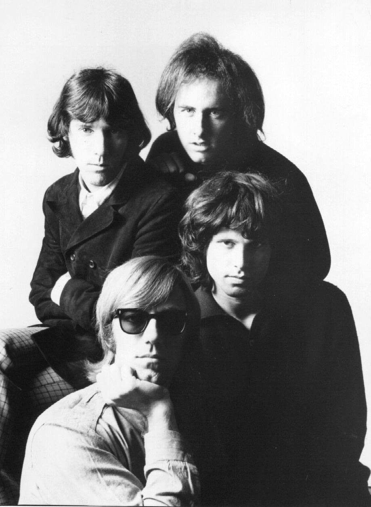
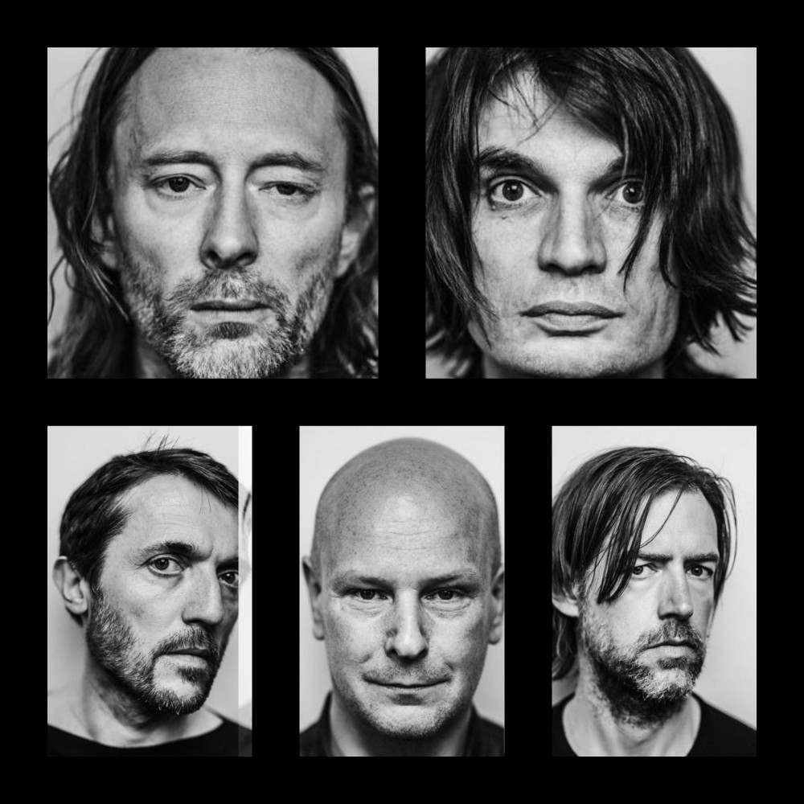
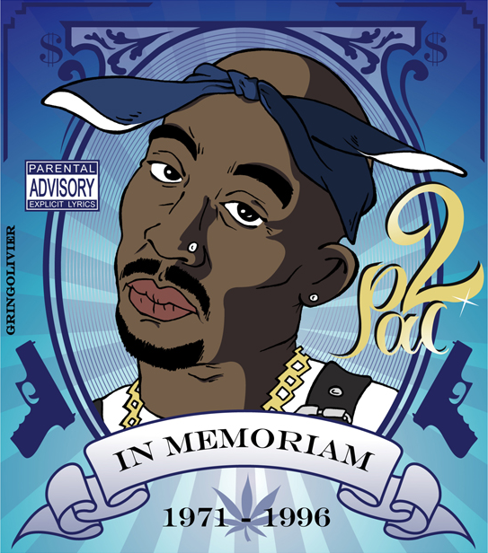
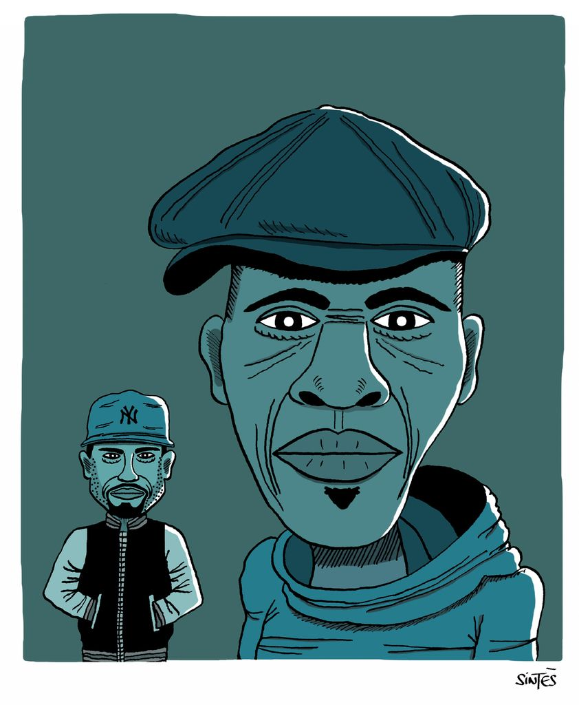

ROCK PSYCHEDELIQUE
STATES
Light my fire
THE DOORS
BRITISH

Interstellar Overdrive
PINK FLOYD
CONTEMPORARY
Everything in its right place
RADIOHEAD
Le rock psychédélique est un genre musical apparu dans les années 1960, en lien avec la contre-culture hippie et le Summer of Love, et influencé par la prise de psychotropes, notamment le LSD.
RAP
WEST COAST
Changes
TUPAC
RAP FRANCAIS
Laisse pas trainer ton fils
N T M
EAST COAST
Juicy
THE NOTORIOUS B.I.G
Le rap est une forme d'expression vocale sur fond musical appartenant au mouvement culturel hip-hop, apparue au milieu des années 1970 dans les ghettos aux États-Unis.